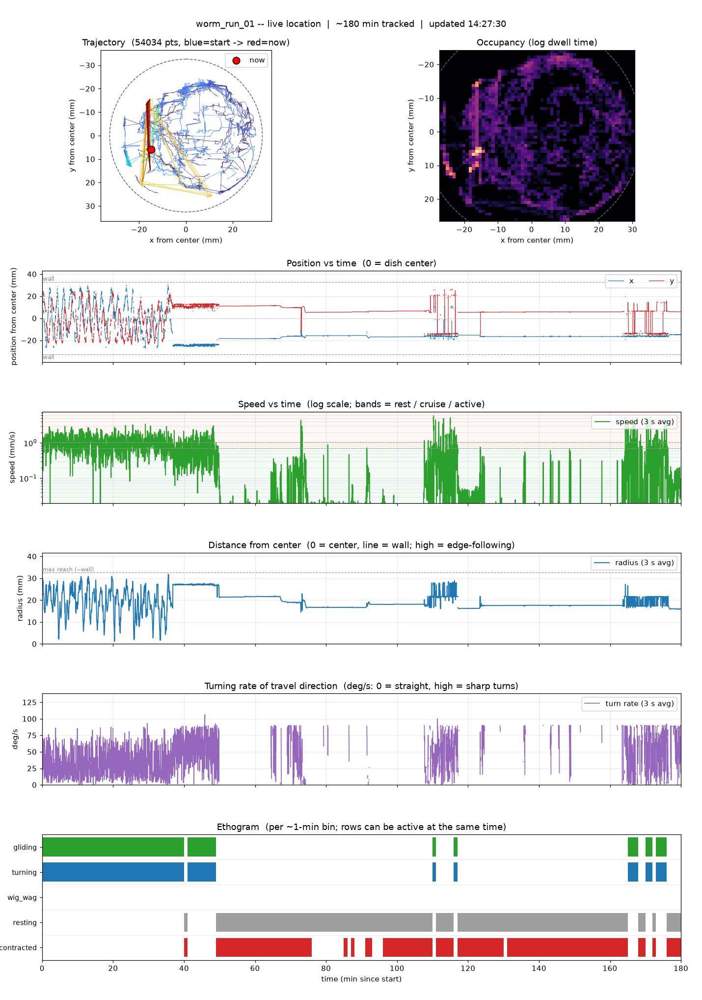

BEHAVIORAL DATA SCIENCERESEARCH LAB
BEHAVIORAL DATA SCIENCERESEARCH LAB
BEHAVIORAL DATA SCIENCERESEARCH LAB
BEHAVIORAL DATA SCIENCERESEARCH LAB
A live look at a single planarian flatworm in its dish. The stream below is the raw rig; the panel underneath is its position and movement, tracked automatically in near-real-time (location, speed, distance from center, and turning) and refreshed continuously.
 Watch live on Twitch
Watch live on Twitch
If you see "Error #1000 - the video download was cancelled," the stream itself is fine - it is your browser, not the rig.
Most common fix: make sure you are logged in to Twitch. Open twitch.tv, sign in, then come back and reload this page. The embedded player needs a signed-in Twitch session to start. Still stuck? Try the options below.
[*.]twitch.tv. Reload the page.
The video you see above is real-time. The tracking plot takes a different path: 1-minute clips upload to Google Drive, and a second Mac pulls and processes them with a YOLO tracker + behavior model every 90 seconds, then publishes the plot here - so the data trails the video by about 3 minutes.
YOLO detector + temporal cleanup, scored against 200 hand-labeled frames.
For scale, the dish is about 50 mm across — a typical error is roughly 1% of the arena.
5-class model, leave-one-out cross-validation (F1 per behavior; 1.0 is perfect).
Numbers are from held-out evaluation on this rig's footage. On the live plot, the locomotion states (gliding / resting / turning) are read directly from the worm's motion, while the model supplies the postural calls (contracted, wig-wag).